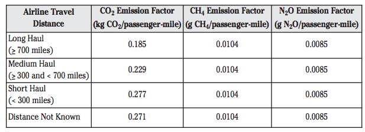

E = PMT * (EFCO2 + EFCH4 * 0.021 +
EFN2O * 0.310)
E = Total CO2-equivalent Emissions
PMT = Passenger Miles Traveled
EFCO2 = CO2 Emission Factor
EFCH4 = CH4 Emission Factor
EFN2O = N2O Emission Factor
0.021 = Conversion Factor
0.310 = Conversion Factor
{% endblock %}